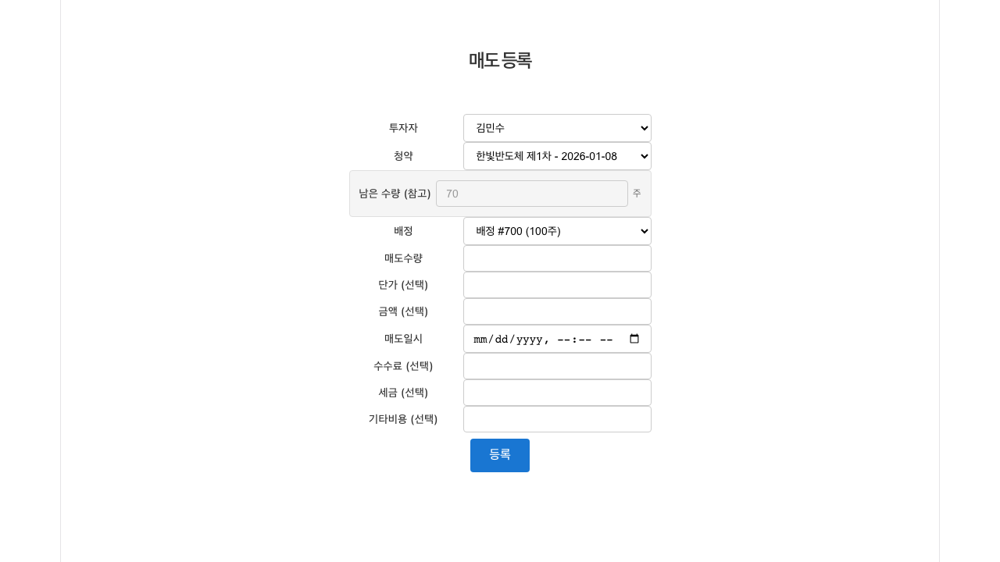
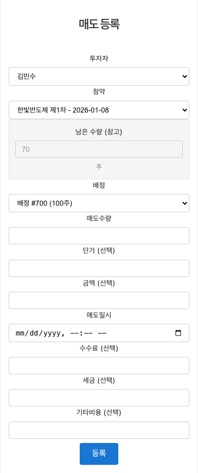
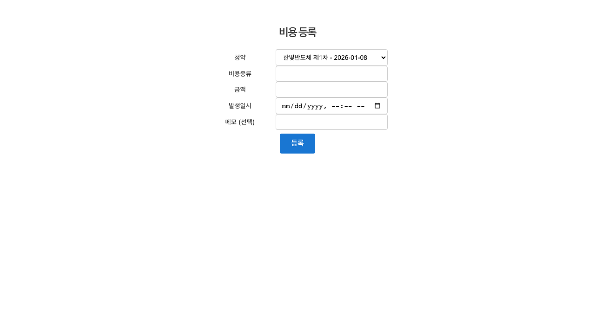
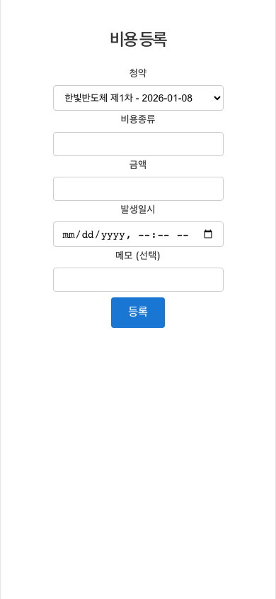
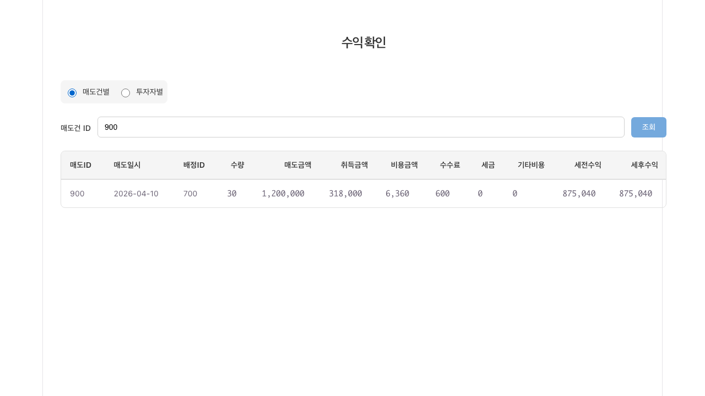
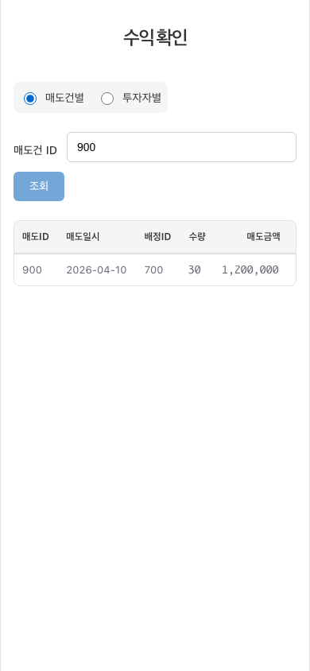

1. 매도 등록
배정된 주식 중 일부를 매도한 사실을 기록하는 화면입니다.
화면의 목적
투자자 → 청약 → 배정 순서로 선택하면 매도할 주식이 좁혀지고, 선택한 배정의 잔여 수량을 참고할 수 있습니다. 남은 수량을 전량 매도하려면 청약이나 배정을 새로 만들 필요가 없습니다.
입력 및 검증: 투자자·청약·배정·매도수량·매도일시는 필수입니다. 매도수량은 0 초과 정수이고, 단가·금액·수수료·세금·기타비용은 입력 시 0 이상 정수여야 합니다.
주요 입력 필드
- 투자자: 매도한 사용자 (목록에서 선택)
- 청약: 해당 투자자의 투자 내역 (선택 시 목록이 갱신)
- 배정: 매도 대상 배정, 청약 선택 시 자동으로 채워짐
- 매도수량: 매도한 주식 수 (0 초과 정수)
- 단가 / 금액 (선택): 단가만 입력하면 금액을 계산해 채웁니다
- 매도일시: 매도 시각
- 수수료 · 세금 · 기타비용 (선택): 0 이상 정수
사용 흐름
- 투자자를 선택하면 청약 목록이 불러옵니다.
- 청약을 선택하면 배정이 자동 선택됩니다.
- 매도수량과 매도일시를 입력하고 비용 항목을 보탭니다.
- 등록을 선택해 저장합니다.


배정은 청약을 고른 뒤 자동으로 채워집니다. 배정이 비어 있으면 해당 청약이 아직 배정 단계가 아니므로 먼저 배정을 등록해야 매도를 기록할 수 있습니다.
2. 비용 등록
청약과 매도에 딸린 비용을 따로 기록해 수익 계산을 정확히 맞추는 화면입니다.
화면의 목적
수수료나 세금처럼 매도 건에 붙지 않는 비용을 청약 단위로 기록합니다. 등록한 비용은 수익 확인 단계의 비용금액에 반영됩니다.
입력 및 검증: 청약·비용종류·금액·발생일시는 필수입니다. 금액은 0 초과 정수이고 비용종류는 255자 이하입니다.
주요 입력 필드
- 청약: 비용이 발생한 투자 내역 (목록에서 선택)
- 비용종류: 비용을 설명하는 문구 (255자 이하)
- 금액: 비용 금액 (0 초과 정수)
- 발생일시: 비용이 발생한 시각
- 메모 (선택): 개인 기록
사용 흐름
- 비용이 발생한 청약을 선택합니다.
- 비용종류와 금액, 발생일시를 입력합니다.
- 등록을 선택해 저장합니다.


매도 화면의 수수료·세금과 비용 화면의 기록은 서로 다른 항목입니다. 두 곳에 나누어 남기면 수익 확인에서 각각 비용금액과 수수료·세금으로 구분해 보여 줍니다.
3. 수익 확인
매도 1건 또는 투자자별 실현수익을 숫자로 확인하는 화면입니다.
화면의 목적
매도건별 탭에서는 매도건 ID로 1건을 조회하고, 투자자별 탭에서는 투자자를 골라 그 사람의 매도 목록과 합계를 봅니다. 조회 전에는 입력 안내만 표시됩니다.
확인할 정보: 표에는 매도ID, 매도일시, 배정ID, 수량, 매도금액, 취득금액, 비용금액, 수수료, 세금, 기타비용, 세전수익, 세후수익이 열로 표시됩니다.
조회 방법
- 매도건별: 매도건 ID 입력 → 조회
- 투자자별: 투자자 선택 → 조회
- 세전수익: 비용을 제외한 매도 이익
- 세후수익: 수수료·세금까지 반영한 최종 이익
사용 흐름
- 매도건별과 투자자별 중 필요한 탭을 고릅니다.
- 매도건 ID 또는 투자자를 선택합니다.
- 조회를 선택해 표를 확인합니다.


표는 12열이 넓어 모바일에서는 가로로 넘쳐 보입니다. 좁은 화면에서는 수치를 대조하기 어렵으니 데스크톱에서 확인하는 편이 편합니다.